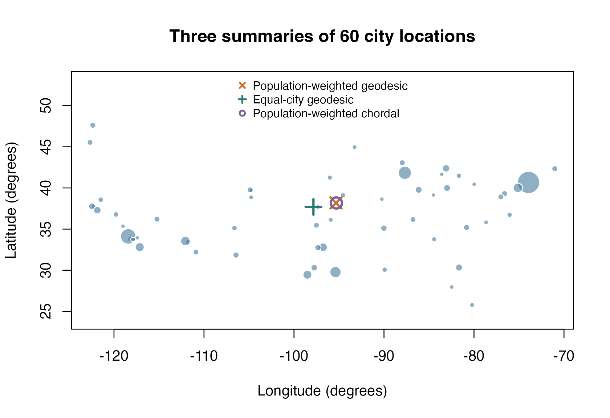

Find a population-weighted center on the globe
Source:vignettes/articles/example-cities-center.Rmd
example-cities-center.RmdWhere is the center of a collection of cities? On a globe, averaging longitude and latitude does not account for spherical geometry. Here we minimize squared great-circle distances, once giving every city equal weight and once weighting each city by its population. The result illustrates a geometric summary of a historical dataset, rather than a transport-cost model or a current facility recommendation.
Start with the sphere
introduction for a simpler unit-vector objective. See geometry and metrics and manifold.sphere()
for the geometry.
Data: historical city locations and populations
The cities dataset in Riemann
contains 60 cities in the contiguous United States with populations
above 300,000, described by the source as January 2006 data. It was
extracted from the maps package. The bundled snapshot comes
from Riemann 0.1.7, pinned to commit
e847692576f8b250c8140e1343b145f72caa379f; no Riemann
installation or download is needed to build this article. See data sources and reproducibility
for attribution, licensing, extraction instructions, and the
checksum.
cities <- readRDS("data/riemann-cities.rds")
locations <- cities$cartesian
population_weights <- cities$population / sum(cities$population)
equal_weights <- rep(1 / nrow(locations), nrow(locations))
stopifnot(
nrow(locations) == 60L, all(is.finite(locations)),
all(is.finite(cities$population)), all(cities$population > 0),
max(abs(rowSums(locations^2) - 1)) < 1e-12
)
data.frame(cities = nrow(locations), total_population = sum(cities$population),
largest_population_share = max(population_weights))
#> cities total_population largest_population_share
#> 1 60 48855377 0.1662955The two geographic columns are latitude and longitude in degrees; the three Cartesian columns are unitless coordinates on the unit sphere. Populations are counts of people and become weights summing to one. There are no missing locations or populations in this snapshot. These cities are a selected subset of the population, not a representative sample of all US residents.
Objective and geometry
Let be a city’s unit Cartesian vector and its normalized weight. On the unit sphere we minimize
The angles are in radians, so the objective has units of squared radians. Multiplying every distance by a fixed Earth radius would rescale the objective without changing the optimizer. This assumes a spherical Earth.
geometry <- manifold.sphere(3)
make_problem <- function(weights) {
riem.problem(
geometry,
function(x, data) {
cosine <- data$locations$matmul(x)$clamp(-1 + 1e-12, 1 - 1e-12)
angle <- cosine$acos()
(data$weights * angle^2)$sum() / 2
},
data = list(
locations = torch_tensor(locations, dtype = torch_float64(), device = "cpu"),
weights = torch_tensor(weights, dtype = torch_float64(), device = "cpu")
)
)
}
weighted_problem <- make_problem(population_weights)
equal_problem <- make_problem(equal_weights)
normalize <- function(x) x / sqrt(sum(x^2))
chordal_center <- normalize(drop(crossprod(population_weights, locations)))
initial <- torch_tensor(chordal_center, dtype = torch_float64(), device = "cpu")All objective tensors are registered through data, so
they travel with the point if the execution device changes. The clamp
protects acos() from roundoff at its endpoints. We check
below that it is inactive at both fitted centers; this example does not
attempt optimization through antipodal cut loci. The normalized
Cartesian average used for initialization minimizes a different
objective: weighted squared chordal distances through the surrounding
space.
Solve and inspect termination
solve_center <- function(problem) {
riem.optimize(
problem, initial, method = "conjugate_gradient",
control = list(max_iterations = 100, gradient_tolerance = 1e-8),
device = "cpu", dtype = "float64"
)
}
weighted_fit <- solve_center(weighted_problem)
equal_fit <- solve_center(equal_problem)
fits <- list(population = weighted_fit, equal_city = equal_fit)
data.frame(
weights = names(fits),
objective = vapply(fits, function(x) x$objective, numeric(1)),
gradient_norm = vapply(fits, function(x) x$gradient_norm, numeric(1)),
termination = vapply(fits, function(x) x$termination, character(1))
)
#> weights objective gradient_norm termination
#> population population 0.03059154 1.501687e-09 converged_gradient
#> equal_city equal_city 0.02682025 5.063259e-10 converged_gradient
weighted_center <- as.numeric(weighted_fit$point)
equal_center <- as.numeric(equal_fit$point)converged_gradient reports that the tangent-gradient
norm reached the requested tolerance. An iteration limit or failed line
search does not by itself certify stationarity. The two objectives use
different weights, so their numerical values are not a contest between
methods.
Plot the cities and their centers
Convert the fitted Cartesian vectors back to latitude and longitude. Marker area is proportional to population; the plot uses geographic coordinates without a downloaded basemap.
to_geographic <- function(x) {
c(longitude = atan2(x[2], x[1]), latitude = asin(x[3])) * 180 / pi
}
centers <- rbind(
"Population-weighted geodesic" = to_geographic(weighted_center),
"Equal-city geodesic" = to_geographic(equal_center),
"Population-weighted chordal" = to_geographic(chordal_center)
)
round(centers, 4)
#> longitude latitude
#> Population-weighted geodesic -95.3310 38.1822
#> Equal-city geodesic -97.8382 37.6935
#> Population-weighted chordal -95.2880 38.1717
The population-weighted center gives larger cities more influence. Longitude and latitude axes are a coordinate display, not an equal-area map.
The population-weighted geodesic and chordal centers nearly overlap at this scale. Their closeness is a property of these clustered locations, not an identity between spherical and Euclidean averages.
Independent verification
Use base R to parameterize the sphere with longitude and latitude in
radians and minimize the same weighted geodesic objective with
optim(). This calculation uses numerical derivatives and no
riemtorch geometry or derivative code. Starting from the equal-city
Cartesian average keeps the reference initialization separate from the
population-weighted fit.
from_angles <- function(a) {
c(cos(a[2]) * cos(a[1]), cos(a[2]) * sin(a[1]), sin(a[2]))
}
base_objective <- function(x, weights) {
cosine <- pmax(-1, pmin(1, drop(locations %*% x)))
sum(weights * acos(cosine)^2) / 2
}
base_gradient <- function(x, weights) {
cosine <- drop(locations %*% x)
angle <- acos(pmax(-1, pmin(1, cosine)))
tangent <- locations - outer(cosine, x)
coefficient <- weights * angle / sqrt(1 - cosine^2)
-drop(crossprod(coefficient, tangent))
}
reference_initial <- to_geographic(normalize(colMeans(locations))) * pi / 180
weights_to_check <- list(population = population_weights, equal_city = equal_weights)
checks <- lapply(names(fits), function(name) {
fit <- fits[[name]]
x <- as.numeric(fit$point)
weights <- weights_to_check[[name]]
reference <- optim(
reference_initial,
function(a) base_objective(from_angles(a), weights),
method = "BFGS",
control = list(reltol = 1e-13, maxit = 200, ndeps = rep(1e-5, 2))
)
stopifnot(reference$convergence == 0L)
c(
unit_norm_error = abs(sum(x^2) - 1),
reference_point_error = sqrt(sum((x - from_angles(reference$par))^2)),
reference_objective_error = abs(fit$objective - reference$value),
base_objective_error = abs(fit$objective - base_objective(x, weights)),
tangent_gradient_norm = sqrt(sum(base_gradient(x, weights)^2)),
maximum_absolute_cosine = max(abs(drop(locations %*% x)))
)
})
checks <- do.call(rbind, checks)
rownames(checks) <- names(fits)
checks
#> unit_norm_error reference_point_error reference_objective_error
#> population 2.220446e-16 2.875908e-09 3.469447e-17
#> equal_city 0.000000e+00 5.059339e-09 3.816392e-17
#> base_objective_error tangent_gradient_norm maximum_absolute_cosine
#> population 1.040834e-17 1.501687e-09 0.9998094
#> equal_city 1.387779e-17 5.063262e-10 0.9999763
chordal_gap <- base_objective(chordal_center, population_weights) -
weighted_fit$objective
center_separation <- sqrt(sum((weighted_center - equal_center)^2))
stopifnot(
all(vapply(fits, function(x) all(riem.belongs(geometry, x$point)), logical(1))),
max(checks[, "unit_norm_error"]) < 1e-12,
max(checks[, "reference_point_error"]) < 1e-6,
max(checks[, "reference_objective_error"]) < 1e-10,
max(checks[, "base_objective_error"]) < 1e-12,
max(checks[, "tangent_gradient_norm"]) < 1e-7,
max(checks[, "maximum_absolute_cosine"]) < 1 - 1e-10,
chordal_gap >= -1e-12,
center_separation > 1e-3
)
data.frame(weighted_geodesic_objective = weighted_fit$objective,
weighted_chordal_objective = base_objective(chordal_center, population_weights),
chordal_objective_gap = chordal_gap)
#> weighted_geodesic_objective weighted_chordal_objective chordal_objective_gap
#> 1 0.03059154 0.03059173 1.900097e-07The base-R tangent gradient is the negative weighted sum of sphere
logarithms. Its small norm provides a stationarity check independent of
automatic differentiation. We compare Cartesian vectors rather than
angles because longitude has a wraparound. The fitted geodesic mean
should do no worse on its own objective than the chordal initialization.
Agreement of two local solvers alone is not a general global-optimality
certificate; dispersed or antipodal data can be substantially harder.
Repeated seeded CPU executions should agree to absolute tolerance
1e-10 in the reported numerical checks.
Interpretation and device selection
Weighting answers a different question from treating each city equally. Here the weighting uses historical city populations rather than metropolitan areas or present-day population counts. Great-circle squared distance also ignores roads, travel time, borders, and site availability. The optimization example shows how to encode a geometric objective without asserting those modeling choices are suitable for a real location decision.
This article selects CPU float64 explicitly. To use automatic device discovery or override it, keep the same registered-data problem and choose:
riem.optimize(weighted_problem, initial, device = "auto", dtype = "float64")
riem.optimize(weighted_problem, initial, device = "cpu", dtype = "float64")
riem.optimize(weighted_problem, initial, device = "cuda:0", dtype = "float64")The CUDA call requires a compatible GPU. Return to the example gallery to compare other objectives and geometries.